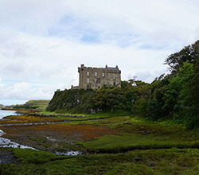

Dunvegan Castle
The Castle is located 1 mile from the small town of Dunvegan, on the west coast of the Isle of Skye. It is built on a raised rock overlooking Loch Dunvegan, one of the lochs that are so prevalent in Scotland.
For 800 years the Castle has been the ancestral home of Clan MacLeod. It is currently the residence of the Clan Chief. The castle stands on top of a rock 1.5 km from the small town of Dunvegan and is one of the most visited castles in Scotland.
Clan MacLeod is one of the 2 main (and sometimes bitter rival) clans on the Isle of Skye. The Chief of Clan MacLeod is a descendant of Olaf the Black, who ruled the Isle of Man around 1200.
One of King Olaf's sons (of Norwegian descent) married the heir to the King of the Isle of Skye. There begins the story of Dunvegan Castle. The first construction was a wall or fort in the 13th century. But the first constructions on the site were likely from the Iron Age or older.
The MacLeod clan has endured through the centuries. They survived glory days, extreme poverty and periods of war with neighbouring clans. They also overcame the enormous political, economic and cultural changes that the whole of Scotland has undergone. However, it was not until the last century that the members of the clan scattered throughout the world began to regroup. At the initiative of his Chief Flora MacLeod (grandmother of the current Chief) his relatives connected with their origins on the Isle of Skye.
From that first wall that guarded houses of wood and straw, the constructions have followed one another. Towers, cellars, halls, barracks and especially its gardens, have been born at different times until the eighteenth century.

In 1933 Dunvegan Castle is opened to visits for charity. Currently, hundreds of thousands of people have crossed the door of this fabulous construction on a basalt rock.
The first surprise that visitors get in Dunvegan is that the Castle is much more luxurious inside than one might expect. Its interiors have been reformed over the years. The castle is currently a permanent country residence much more comfortable than it seems.
Dunvegan Castle holds many treasures in works of art and relics. It is a special one that has the most intriguing story: The Fairy Flag (Fairy Flag) or Enchanted Flag.The Fairy Flag has saved the MacLeods on at least 2 occasions by being taken down. In the battles of Glendale and Trumpan, he multiplied his troops and saved them from various famines and plagues.